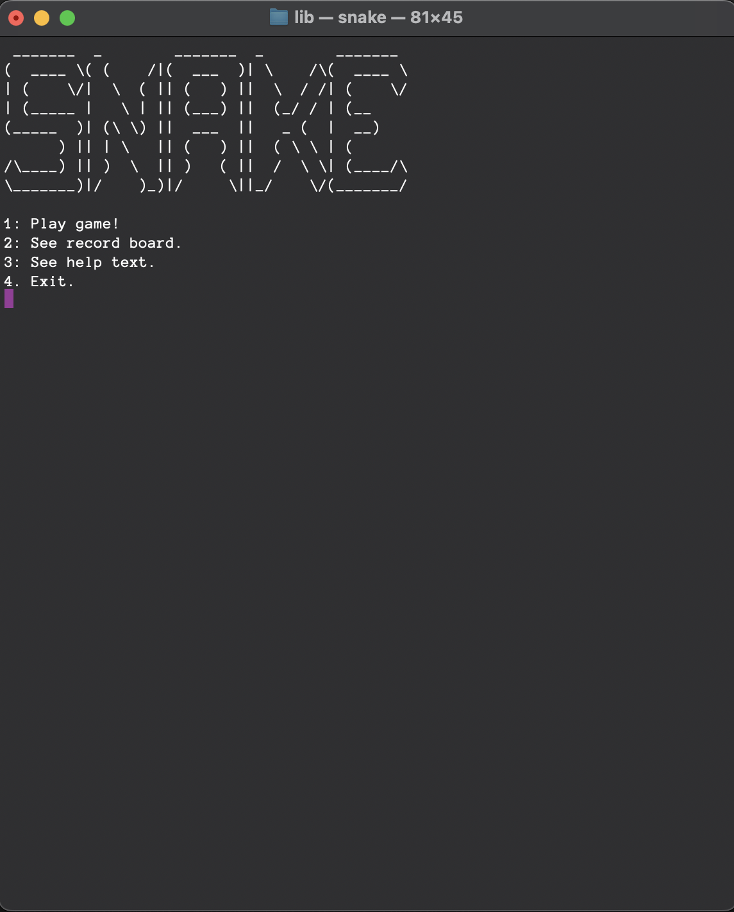
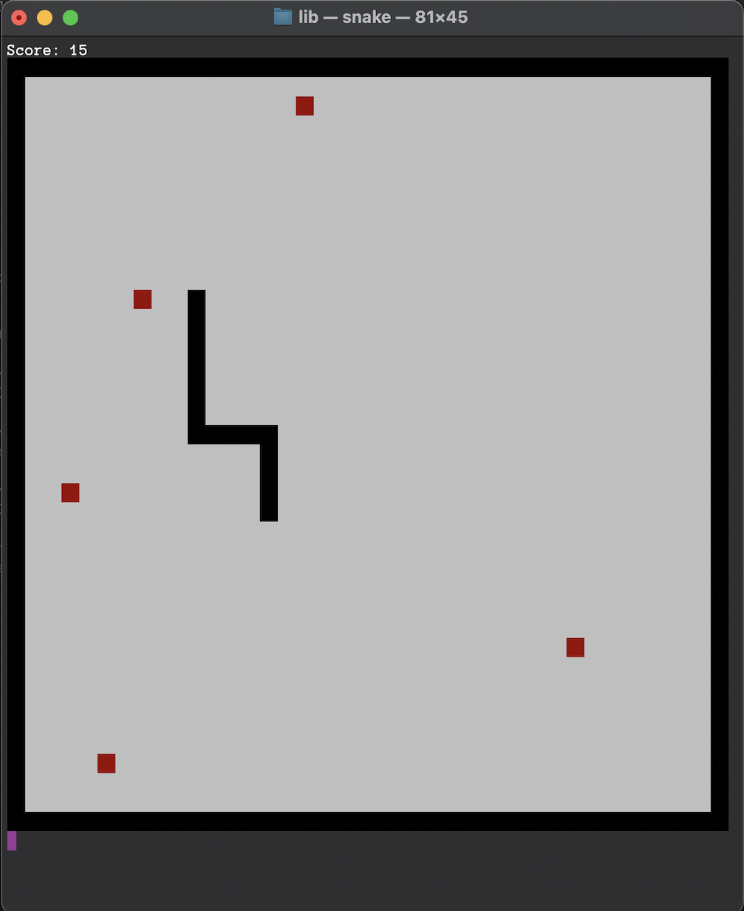
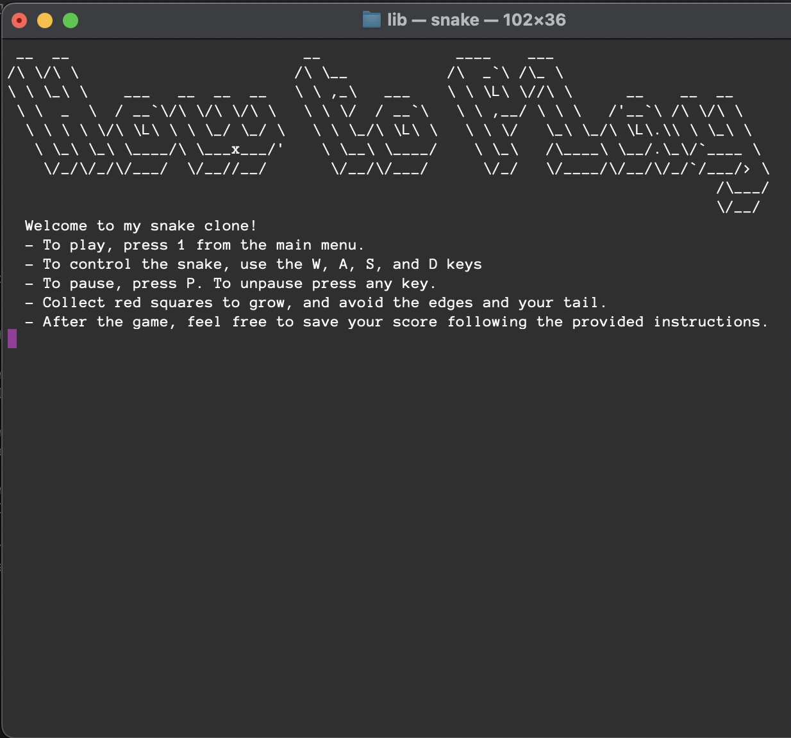

TerminalSnake Development Blog
Overview
TerminalSnake is my first venture into C++. I wanted to build something fun, but also something that would challenge me. I set out to create a clone of Snake without using a GUI library. So, I set out learning ASCII escape codes and interfacing with the terminal.
Realistically, I spent way too much time on this little project, but I don't regret it. C++ quickly became one of my favorite languages, especially since I had just completed my first ECE class and already had a comprehensive understanding of pointers.
I will definitely be building more retro games in the future, possibly factoring out my code from this project into a terminal game engine.



Design Challenges
Achieving unbuffered input from the keyboard without hanging the game loop was a new type of challenge for me. I began using the ncurses library which provided the getch function, as well as various options for manipulating colors in the terminal. However, I discovered this library was fidgety (at best) when it came to cross-compatibility, so I resolved to use only C++ standard libraries.
Pre-Processing Conditionals
Much to my chagrin, I discovered there was no universal way to receive unbuffered input from the terminal in C++, so I was forced to learn more about pre-processing directives and how C++ programs interact with the operating system. By using conditionals, I was able to develop two separate getch functions for Unix and Windows.
Windows was easy, utilizing the conio.h library and its _getch function. Unix was a different bear. After combing through StackOverflow and interrogating ChatGPT, I developed this function:
char get_unbuffered_input()
{
char ch;
termios old_term;
// Get current terminal settings
tcgetattr(STDIN_FILENO, &old_term);
// Set terminal to unbuffered mode
set_unbuffered_mode(old_term);
// Read a single character
read(STDIN_FILENO, &ch, 1);
// Reset terminal to original mode
reset_terminal_mode(old_term);
return ch;
}In hindsight, I could have just included ncurses OR conio.h depending on the OS, but I learned a lot taking these extra steps, so no regrets.
Asynchronous Key Listener
My custom getch function, as well as the built in conio.h _getch functioned differently than the ncurses getch. There was no option to make these functions non-blocking, so I decided to run a listener loop in a separate thread.
This listener object keeps a reference to the input queue attribute of the main game. It loops continuously, checking for input every few milliseconds. When it detects input, it pushes to the main game's input queue.